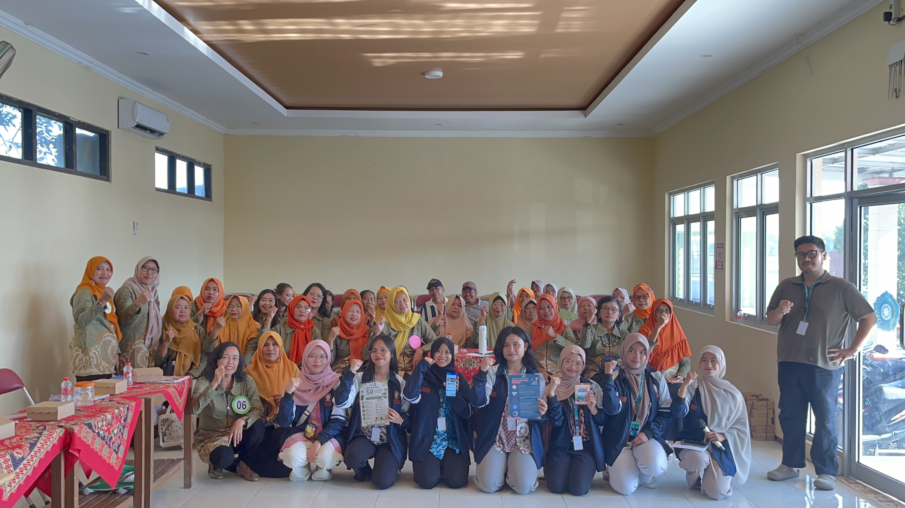
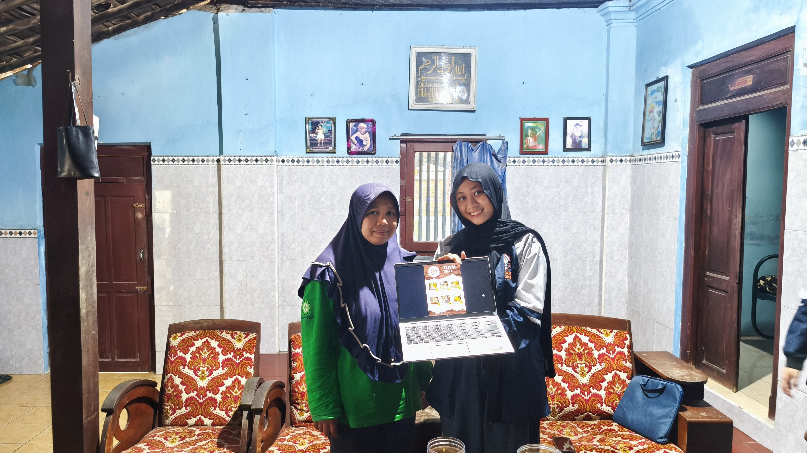
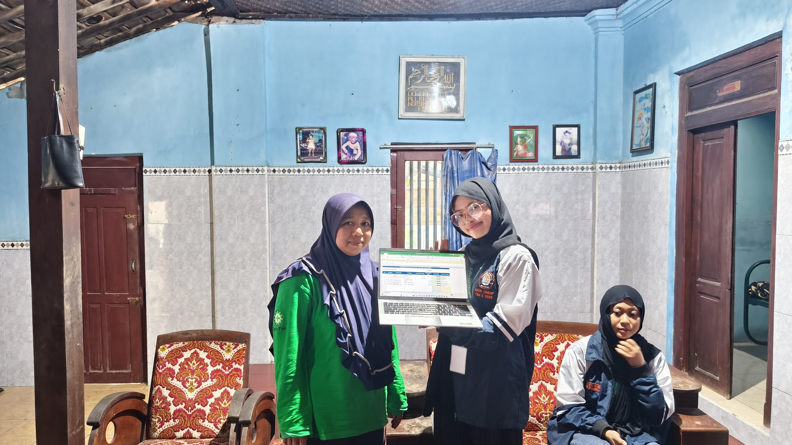
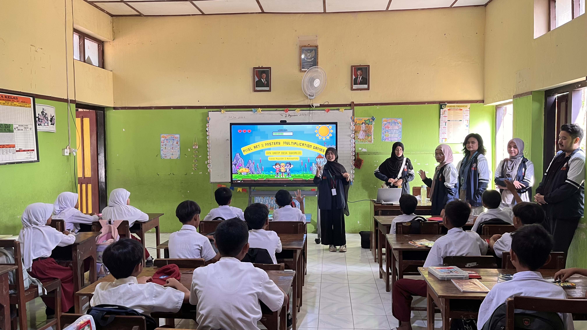
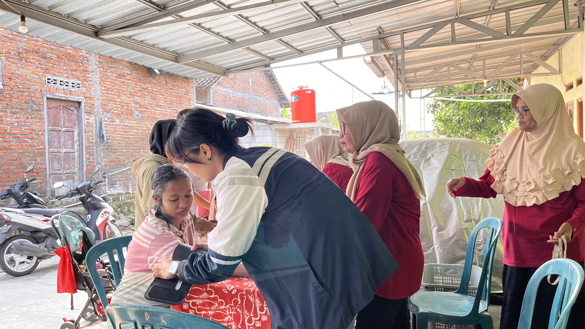
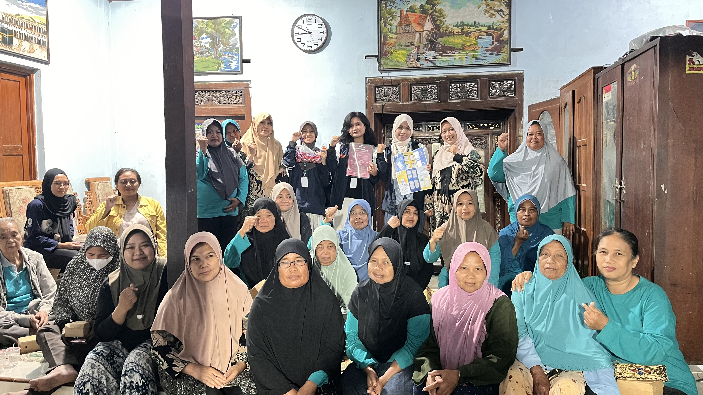
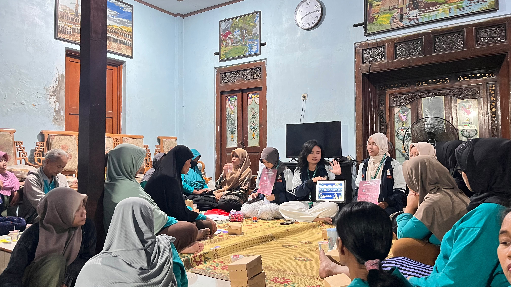

Berita Terbaru
Informasi Desa Sukorejo
Berbagai kegiatan dan informasi terbaru dari Desa Sukorejo.

Sosialisasi Penguatan Ekosistem UMKM
Sosialisasi Penguatan Ekosistem UMKM melalui Digitalisasi, Pendataan, Legalitas, Manajemen, Branding, dan Efisiensi Energi di Desa Sukorejo.
Baca Selengkapnya
Pendampingan Digitalisasi UMKM di Tutu Snack
Dorong Kemandirian UMKM Sukorejo, Mahasiswa KKN Undip Dampingi Digitalisasi di industri rumahan Tutu Snack.
Baca Selengkapnya
Pendampingan Pemisahan Keuangan Pribadi dan Usaha kepada UMKM Tutu Snack
Mahasiswa Kuliah Kerja Nyata (KKN) melaksanakan program kerja berupa sosialisasi dan pendampingan pemisahan keuangan pribadi dan keuangan usaha kepada UMKM Tutu Snack.
Baca Selengkapnya
Mahasiswa KKN UNDIP Kenalkan Gamifikasi Matematika di SD Negeri Sukorejo
Pengenalan Gamifikasi Matematika melalui Pixel Art × Mystery Multiplication Games” di SD Negeri Sukorejo yang menghadirkan pembelajaran matematika yang lebih menarik, interaktif, dan menyenangkan.
Baca Selengkapnya
Mahasiswa KKN UNDIP Dampingi Kegiatan Posyandu di Desa Sukorejo
Mahasiswa Kuliah Kerja Nyata (KKN) Universitas Diponegoro (UNDIP) Tim II Desa Sukorejo turut berpartisipasi dalam kegiatan Posyandu bentuk keterlibatan mahasiswa KKN dalam mendukung kegiatan pelayanan kesehatan masyarakat.
Baca Selengkapnya
Kontribusi Mahasiswa Ilmu Perpustakaan dan Informasi dalam Pengelolaan Perpustakaan Desa Sukorejo
Mahasiswa Kuliah Kerja Nyata (KKN) melaksanakan kegiatan pengelolaan koleksi dan administrasi dasar perpustakaan agar dapat mendukung pemanfaatan perpustakaan oleh masyarakat.
Baca Selengkapnya
Sosialisasi Aplikasi PLN Mobile dan SIGNAL
Mahasiswa Kuliah Kerja Nyata (KKN) Universitas Diponegoro melaksanakan kegiatan sosialisasi pengenalan aplikasi PLN Mobile dan SIGNAL kepada masyarakat dalam kegiatan rapat rutinan ibu-ibu PKK RT 01.
Baca Selengkapnya
Mahasiswa KKN UNDIP Sosialisasikan Pencegahan Penipuan di Media Sosial kepada Ibu-Ibu Desa Sukorejo
Mahasiswa KKN Universitas Diponegoro (UNDIP) melaksanakan program kerja “Sosialisasi Sadar Hukum terhadap Penipuan di Media Sosial (Cyber Crime)”.
Baca Selengkapnya
Mahasiswa KKN UNDIP Kembangkan Sistem Monitoring Suhu Air Hidroponik untuk Mendukung Budidaya KWT Desa Sukorejo
Mahasiswa KKN Universitas Diponegoro (UNDIP) melaksanakan program kerja “Pengembangan Sistem Monitoring Suhu Air Hidroponik” yang ditujukan kepada Kelompok Wanita Tani (KWT) Desa Sukorejo
Baca Selengkapnya
Mahasiswa KKN UNDIP Dampingi Orang Tua dalam Membangun Literasi Anak Sejak Dini di Desa Sukorejo
Pendampingan Literasi Anak melalui Parenting Orang Tua di Desa Sukorejo sebagai upaya mendukung tumbuh kembang literasi anak sejak usia dini
Baca Selengkapnya
Sosialisasi Parenting Positif bagi Orang Tua Murid TK Pertiwi dan KB Buah Hati Bunda Desa Sukorejo
Sosialisasi Parenting Positif kepada orang tua murid TK Pertiwi Desa Sukorejo dan KB Buah Hati Bunda sebagai upaya mendukung pola asuh yang lebih baik terhadap anak usia dini.
Baca Selengkapnya